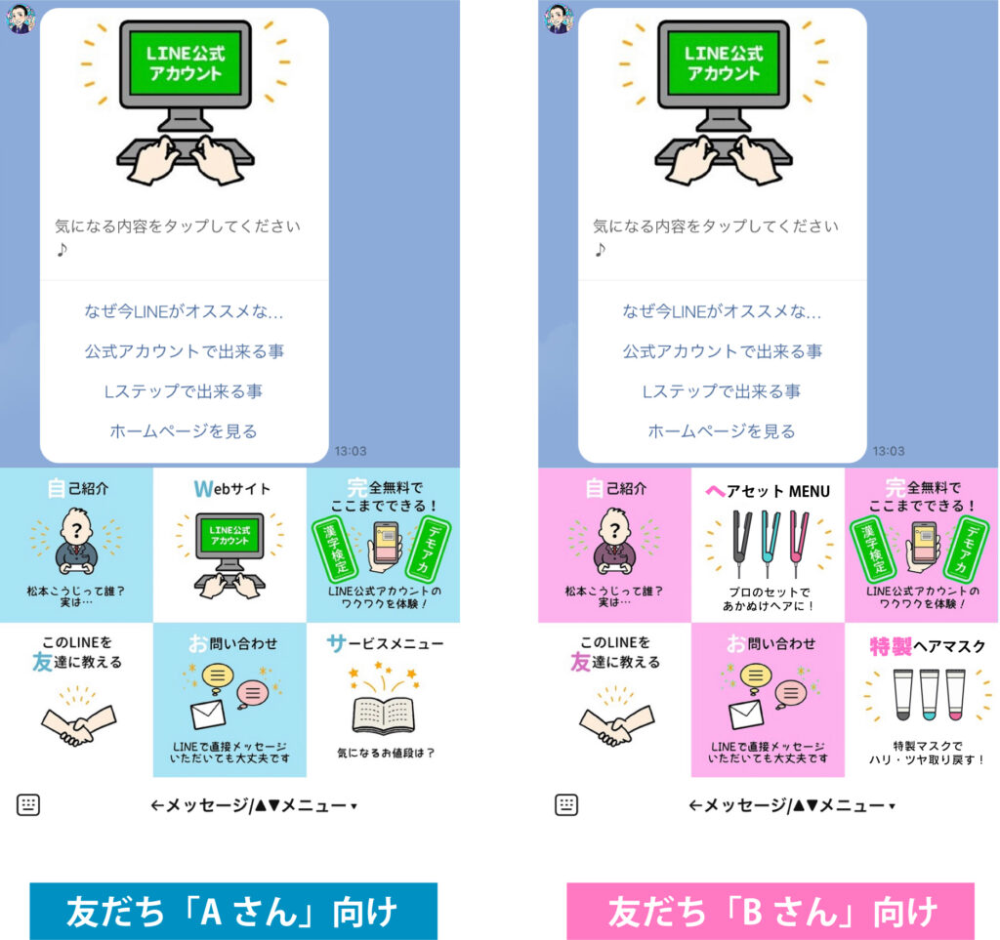
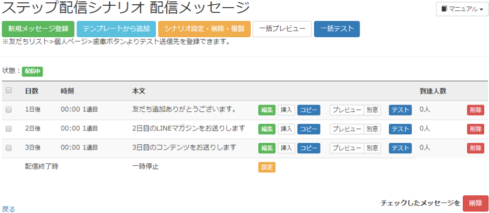

#033_Lステップでリピート率をアップ！

営業戦略を立てる上で重要な要素となる「1:5の法則」をご存知ですか？
売上を上げるためには、まず「新規顧客獲得を！」となりがちですが、同時に既存顧客の維持も重要です。コスト面で見ると、新規顧客の獲得には、既存顧客維持の約5倍のコストが掛かってしまうことをご存知でしたか？
これが、「1:5の法則」です。新規顧客を獲得することはもちろん大切ですが、その顧客がリピーター化してくれないと、永遠に5倍のコストをかけて顧客を探し続けることになります。
そのような状況に陥らないために、お店の売上内容をきちんと把握する必要があります。顧客のリピート率があまり良くない場合は、自社の商品やサービス内容を磨き、どうしたらリピートされるかという課題を深掘りして探る必要があります。
matsumotoが推しているＬステップは、リピート率UPと非常に相性の良いツールです。今回は美容院などで活用できる手法をいくつか紹介します！
（１）定期的に配信する

まず、来店されたお客様に友だち登録してもらい、再来店してもらえるようメッセージを自動配信するのは基本です。ただ、よく内容を考えもせず『またのご来店お待ちしております』という文章を送っただけでやった気になってしまっていませんか？？？ そんな配信でまた来店してもらえることはまず無いでしょう。
どんな内容や企画を、どのタイミングで配信するのが最適かは、お店それぞれの規模や個性・得意分野によって様々です。試行錯誤しながらどんな配信が一番来店してもらえるのか、探り続けるしかありません。
（２）リッチメニューに表示させておく

これ、意外と使用されていないのですが、リッチメニューに『リピートしてほしいメニュー』を表示させておく、という手法があります。配信ではなく、友だちがあなたのLINEアカウントを開くたびに目にするため、無意識に記憶に刷り込まれます。
さらに、その中でも一番有効なやり方は『セグメントリッチメニュー』という機能を使うことです。これは、スタンダードプラン以上を利用している人が使えるもので、友だちの属性や条件によって表示させるリッチメニューを変更できるのです。
友だち登録してもらったお客様については、その属性（女性か男性か、年齢、居住地、その他登録情報）がわかっているので、属性に相応しいリッチメニューを表示して、再来店につなげていくのです。
（３）リピート用のステップ配信をする

こちらも裏技的テクニックですが、ステップ配信の活用方法のひとつです。
皆さま、「ステップ配信＝登録時に配信する“新規顧客向けツール”」という思い込みがありませんか？確かに、初めて来店してもらったところからスタートするものですが、これをリピーター獲得用ツールとして考えるのです。
次回の来店を促すために、“一週間ごと”でも“○日間連続”でも、何でもいいです！ とにかく、リピーターになってもらえるタイミングやコツを掴むまで、いろいろなシナリオを考え、試してみましょう。内容も、お店の商品やサービス・利益率など詳細に組み立てて、顧客が飛びつきたくなるようなものを考案します。
手応えを感じるものを配信できるようになれば、あとは自動配信にお任せ！ステップ配信は一度作成してしまえば自動で配信されますので、配信内容に頭を悩ませることも無くなります。
他にも、さらにLステップの機能を使い込んだ施策もあります！ご興味がある方、もっと知りたいという方は、ぜひmatsumotoを友だち追加してご相談ください。現在、初回無料相談が人気で60分→30分無料相談とさせていただいています。ご了承ください。